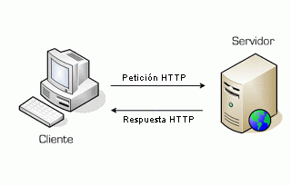

Aprende algo nuevo
La mejor información esta aquí
Servidores Web y de aplicaciones
Contenedor web: Es lo que comúnmente denominamos servidor web. Es la parte visible del servidor de aplicaciones. Utiliza los protocolos HTTP y SSL (seguro) para comunicarse. Servidor de aplicaciones: Proporciona servicios que soportan la ejecución y disponibilidad de las aplicaciones desplegadas.

Introducción
Los servidores web son los pilares del Hosting, permiten a los clientes alquilar almacenamiento en servidores para alojar sus archivos.
Un servidor HTTP, conocido como servidor web, es un software que se instala, corre y procesa información desde el lado del server.
El servidor web es el encargado de despachar archivos por los protocolos HTTP y HTTPS hacia un cliente que solicita dicha información.
Los servidores HTTP suelen almacenar por lo general páginas web, que incluyen archivos HTML, PHP, ASP, etc, así como imágenes, vídeos y audio.
Son los encargados de servir todo lo que se pide desde una computadora cuando alguien visita tu web, a ellos les debemos la evolución de la web tal como la vemos hoy.
En resumen, un servidor web es un equipo informático que satisface peticiones de otras máquinas (clientes) de forma remota que trabaja usando el modelo cliente servidor.
Cuando hablamos de un servidor nos referimos a un hardware conectado a una red. El hardware que usa justamente es una de las características de los servidores web en las que difiere de los equipos hogareños, pues poseen potentes CPUs, muchísima memoria RAM, discos SSD de alto rendimiento y enlaces a Internet de 1Gbps o más.
Como vemos, existen diferentes servidores web para diferentes tipos de necesidades, ahora vamos a explorar cuáles son las clases de servidores web más conocidos hoy en día a nivel de software.
Un Servidor Web básico suele estar integrado por 3 tipos fundamentales de programas que son:
1. Servidor Web
2. Base de Datos
3. Lenguaje de Programación, Scripting y Marcado
Tipos de Servidores Web
Principales libres, abiertos y gratuitos
1. Apache
2. NGINX
Principales privativos, cerrados y comerciales
1. Cloudflare Server
2. LiteSpeed
3. Microsoft IIS
Otras opciones libres, abiertas, privativas y cerradas
1. Apache Tomcat
2. Apache Traffic Server
3. Google Servers
4. IBM Servers
5. Lighttpd
6. Node.js
7. Oracle Servers
8. Tengine
Dependiendo de cómo se combinen los anteriores programas individuales dentro de un «Servidor Web» como una solución integral, los mismos suelen llamarse o clasificarse de la siguiente manera:
1. LAMP: Sistema Operativo Linux + Apache-MySQL-PHP
2. LAMPPP: Sistema Operativo Linux + Apache_MySQL/MongoDB_PHP/PERL/Python
3. LNMP: Sistema Operativo Windows + Nginx_MariaDB_PHP
4. LAPP: Sistema Operativo Linux + Apache_PostgreSQL_PHP
5. MAMP: Sistema Operativo MacOS + Apache_MySQL_PHP
6. MAMPPP: Sistema Operativo MacOS + Apache_MySQL_PHP_PERL_Python
7. MAPP: Sistema Operativo MacOS + Apache_PostgreSQL_PHP
8. WIMP: Sistema Operativo Windows + IIS_MySQL_PHP
9. WNMP: Sistema Operativo Windows + Nginx_MariaDB_PHP
10. WAMP: Sistema Operativo Windows + Apache_MySQL_PHP
11. WAMPPP: Sistema Operativo Windows + Apache_MySQL_PHP/PERL/Python
12. WAPP: Sistema Operativo Windows + Apache_PostgreSQL_PHP
13. XAMPP: Sistema Operativo Linux/MacOS/Windows + Apache_MariaDB_PHP/Perl
Los programas mencionados en la imagen superior son algunos de los existentes tanto en el mundo del Software Libre y Abierto, como en el mundo del Software Privativo y Cerrado para la implementación integral de un Servidor web
Servidores de Aplicaciones
Básicamente, un servidor de aplicaciones consiste en un contenedor que abarca la lógica de negocio de un sistema, y que provee respuestas a las peticiones de distintos dispositivos que tienen acceso a ella. Son un claro ejemplo del modelo cliente-servidor, cuyo lado cliente ejecuta requerimientos de procesamiento al otro lado, donde el servidor se encarga de procesar y responder.
En la actualidad existe una gama muy amplia de tipos de servidores de aplicación, basados en distintas tecnologías. Los más usados son los que funcionan con arquitectura J2EE 7 hechos con tecnología Java, ya que garantizan multiplataformidad. Entre ellos se puede encontrar:
1. JBoss.
2. GlassFish
3. Oracle application server.
4. Jetty.
5. IBM WebSphere.
6. JOnAS
7. Geronimo
| Sistemas Operativos compatibles: | Windows, Linux. |
Conclusión
Para saber elegir bien que tipo de «Servidor Web» se necesita instalar y configurar, o que programas individuales o solución integral de «Servidor Web» se debe implementar, se requiere tomar en cuenta las capacidades y características del Hardware y Sistema Operativo ha usar, el tipo de páginas o sistemas web ha ser administrados y hasta el tipo de herramientas de desarrollo de software que se pueda llegar a instalar si fuese el caso.
Fuentes
1. https://blog.infranetworking.com/tipos-de-servidores-web/
2. https://www.ecured.cu/Arquitectura_Cliente_Servidor#Introducci.C3.B3n
3. https://blog.desdelinux.net/servidores-web-mejores-programas-libres-abiertos/
4. https://www.ecured.cu/Servidor_de_aplicaciones
5. https://www.clubdetecnologia.net/blog/2014/java-top-5-servidores-de-aplicacion-opensources/
Nuevos Temas llegaran a nuestra web, Actualizandonos dia a dia.